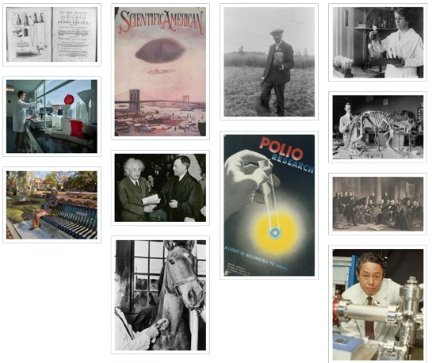

Welcome to our sanctuary of knowledge, where the enchanting whispers of literature and the profound echoes of wisdom converge. As you step into our library, you are embraced by the boundless world of imagination and discovery. Each shelf bears the weight of countless stories, waiting to be unfolded and shared. The air is filled with the scent of aged pages, inviting you to embark on a journey through time and space. Whether you seek refuge in the embrace of fiction or the enlightenment of non-fiction, our shelves are adorned with a diverse tapestry of literary treasures. With every turn of a page, you are transported to distant realms, enlightened by the brilliance of human thought, and enveloped in the magic of storytelling. This library is not merely a collection of books; it is a portal to infinite possibilities, a haven for the curious minds yearning for intellectual enrichment. Join us in celebrating the power of words and the unending adventure that awaits within these hallowed walls. Welcome to a place where the written word is not just stored, but cherished, revered, and celebrated.
